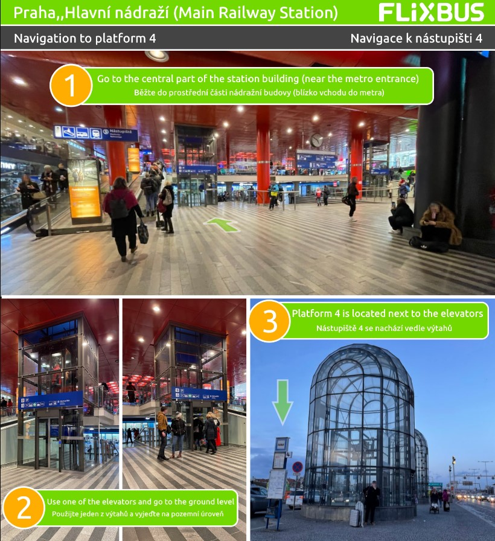
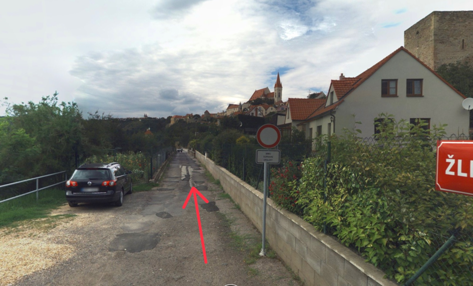
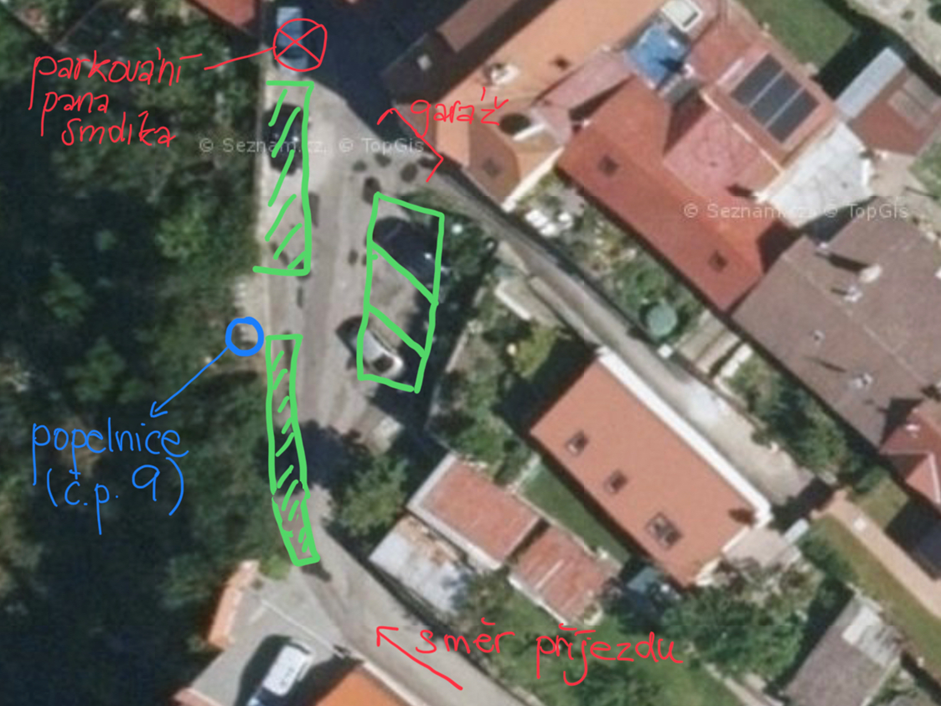

Founded around 1226 by King Ottokar I of Bohemia, Znojmo is the centre of a well-known wine region that boasts grand castles, distinctive cuisine and sprawling vineyards that have earned it the moniker "Moravian Tuscany".
Major tourist attractions are the tunnels, as well as the Castle complex. For nature enthusiasts, Podyjí National Park offers a 63 square kilometers landscapes reminiscent of the Alps in summer.
ATTENTION: For Friday, the bus to Znojmo leaves at 18:05. Follow the below instructions to reach the corresponding platform and please make sure that you are on time.

A few minutes before arriving at Dům Nad Řekou, you pass a sign indicating limited access. This sign does not apply to you, as guests, as according to the regulation, you fall under the category of "transportation service", and therefore you can continue driving without any hesitation.
Upon arrival, you can park your car in our garage, which will be available to you throughout your all stay. There is a small parking area in front of the house where you can park another car if necessary. We kindly ask you to be considerate and park in a way that allows the passage of other cars.
We also have an unwritten rule on our parking area. Our neighbour, Mr. Smolík, likes to park his car in front of his garage. Although he doesn't have any right to that spot, we let him and ourselves have peace and try not to park in "his" place.
We also do not recommend parking directly in front of our garage, as it restricts the comfortable maneuvering of other cars. On the plan below, it is marked in green where and in which direction to park, so that the parked cars do not restrict each other.
Please park the third and subsequent vehicles outside of Žleby Street. You can park on designated paid parking lots or in adjacent streets (e.g. Dyjská Street) - in places that are not reserved for residents.
 If you have any questions, do not hesitate to contact us:All payment information will be settled once we arrive in Znojmo.